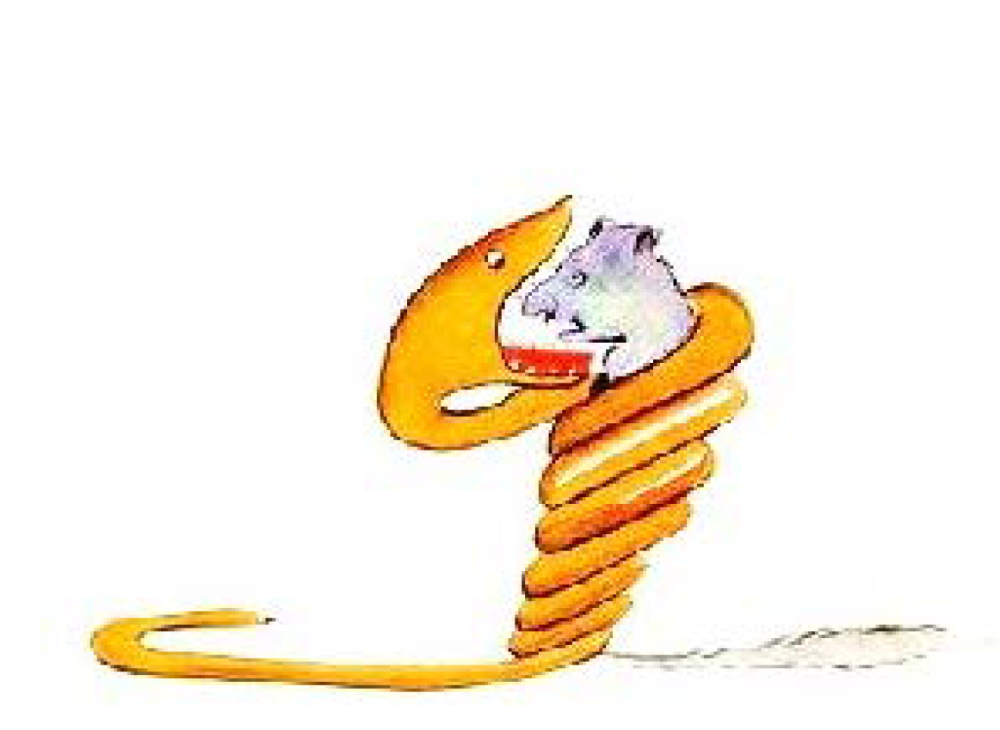
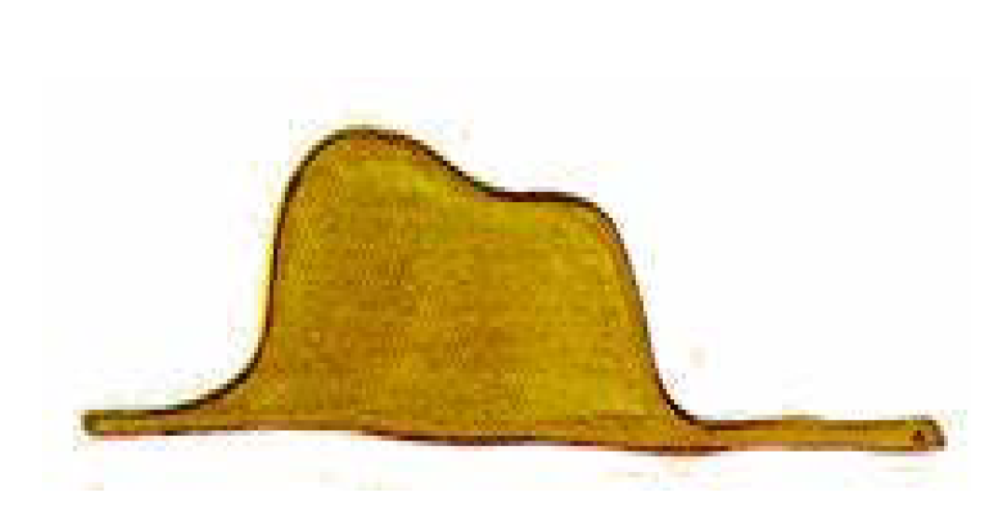
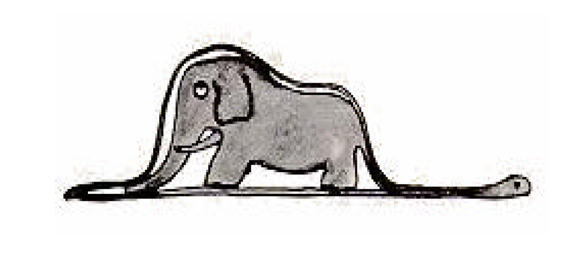

Capítulo 1
Cuando yo tenía seis años vi en el libro sobre la selva virgen: Historias vividas, una grandiosa estampa. Representaba una serpiente boa comiéndose a una fiera. He aquí la copia del dibujo.
Descripción del dibujo: Una anaranjada, larga y fuerte serpiente Boa está enrollando hábilmente a un animal gris y púrpura. De forma amenazante e inminente, la Boa está por engullir a su presa, que la mira aterrorizada.
En el libro se afirmaba: “La serpiente boa se traga su presa entera, sin masticarla. Luego, como no puede moverse, duerme durante los seis meses que dura su digestión”. Reflexioné mucho en ese momento sobre las aventuras de la jungla y logré trazar con lápices de colores mi primer dibujo. Mi dibujo número 1 era de esta manera:
Descripción de la imagen: Una marrón y muy alargada serpiente Boa ha engullido a su presa, que se encuentra dentro de su cuerpo provocando un gran ancho en ella. El cuerpo de la víbora es tan alto debido al animal que ha comido, que su forma parece la de un simple sombrero marrón claro.
Enseñé mi obra de arte a las personas mayores y les pregunté si mi dibujo les daba miedo. –¿Por qué habría de asustarme un sombrero? –me respondieron. Mi dibujo no era un sombrero. Representaba una serpiente boa que digiere un elefante. Entonces dibujé el interior de la serpiente boa para que las personas mayores pudieran comprender. Los mayores siempre tienen necesidad de explicaciones. Mi dibujo número 2 era así:
Descripción de la imagen: Un elefante grande y gris se vislumbra en lo que parece ser el interior transparente de la boa.
Las personas mayores me aconsejaron abandonar el dibujo de serpientes boas, fueran abiertas o cerradas, y poner más interés en la geografía, la historia, el cálculo y la gramática. De esta manera, a la edad de seis años abandoné una magnífica carrera de pintor.
Había quedado desilusionado por el fracaso de mis dibujos número 1 y número 2. Las personas mayores son incapaces de comprender algo por sí solas y es muy fastidioso para los niños darles explicaciones una y otra vez.
Así, tuve que elegir otro oficio y aprendí a pilotear aviones. He volado un poco por todo el mundo y, en efecto, la geografía me ha servido mucho; al primer vistazo puedo distinguir perfectamente China de Arizona. Esto es muy útil, sobre todo si se pierde uno durante la noche.
A lo largo de mi vida he tenido multitud de contactos con multitud de gente seria. Viví mucho con personas mayores y las he conocido muy de cerca; pero esto no ha mejorado mi opinión sobre ellas.
Cuando me he encontrado con alguien que parecía lúcido, he ensayado la experiencia de mostrar mi dibujo número 1 que he conservado siempre. Quería saber si era verdaderamente un ser comprensivo pero siempre contestaban: "Es un sombrero". Me abstenía entonces de hablarles de la serpiente boa, de la selva virgen y de las estrellas. Poniéndome a su altura, les hablaba de su mundo: del bridge, del golf, de política y de corbatas. Y la persona mayor quedaba contentísima de conocer a un hombre tan razonable.